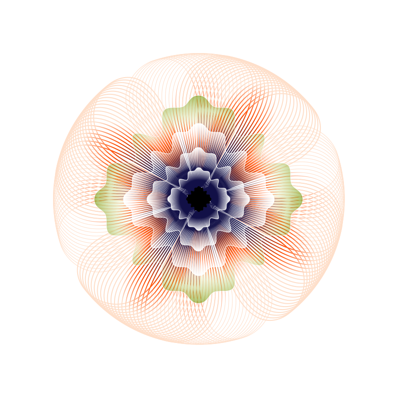
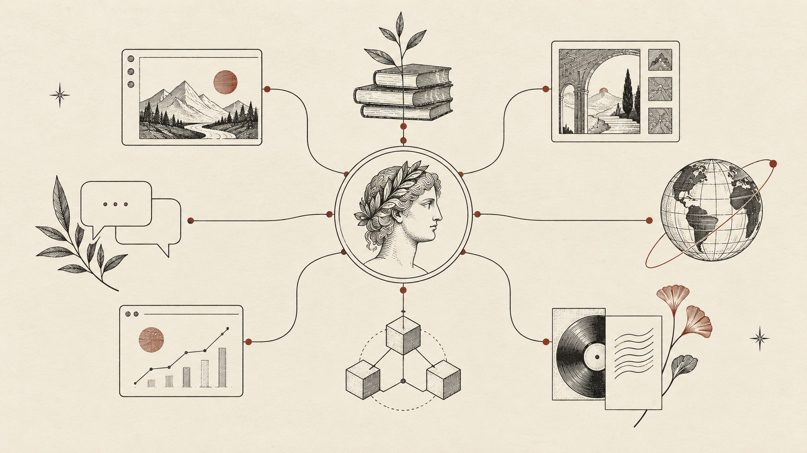
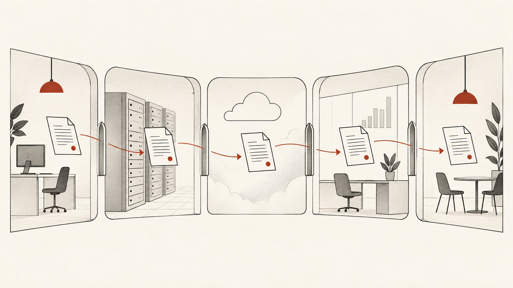
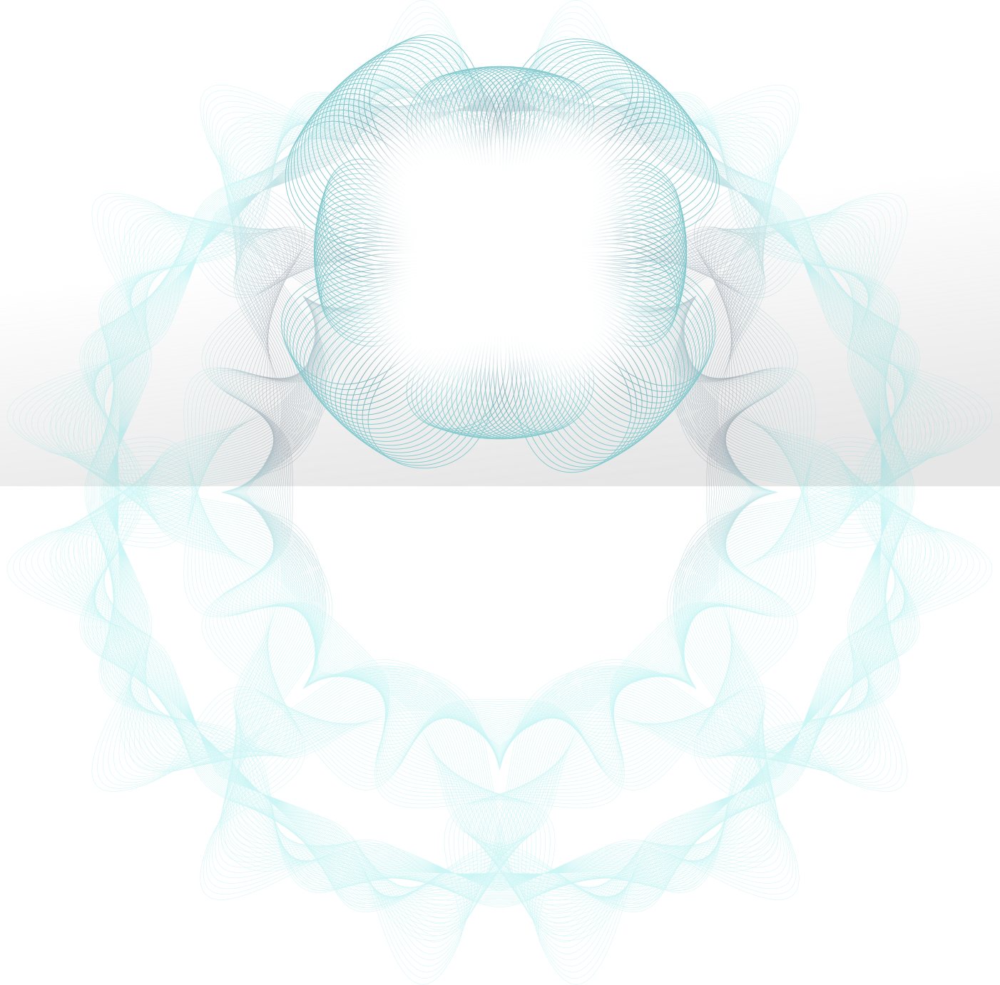
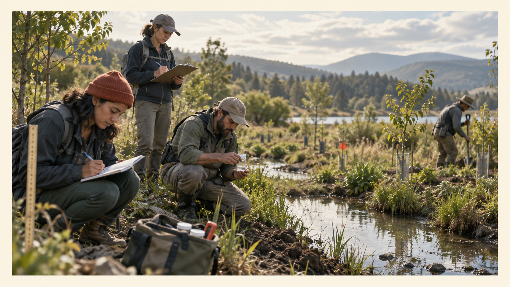
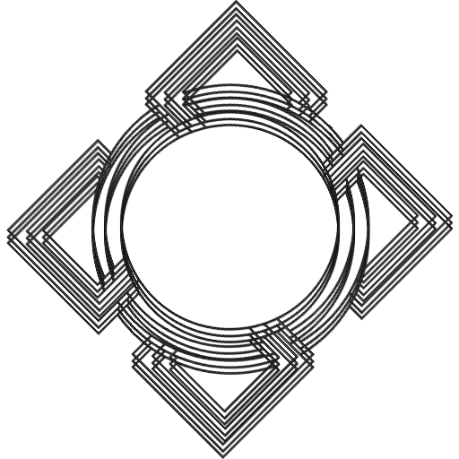
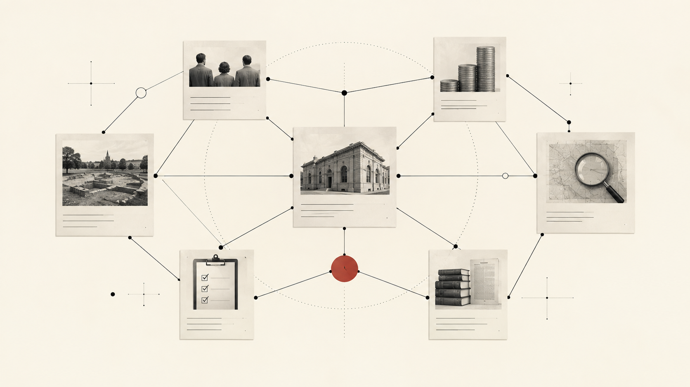

Hypercerts Foundation
Hypercerts:
a crash course
Open infrastructure for valuable work
Identity · portability · trust
The open web
One identity, many apps
not one platform.
- One identity, many apps — built on ATProto and Bluesky.
- Your identity is not owned by any single platform.


Data portability
Your data follows you
wherever you go.
- Your data follows you across applications.
- Self-host it, or let a provider hold it — credible exit either way.
- You are never locked in.

The plumbing
Shared schemas
make open data usable.
Lexicons are shared schemas that different applications can read and write against.
This is the plumbing that makes portability actually work.

A protocol, not a platform
Hypercerts is open infrastructure
for recording, evaluating, and funding work.
The shared language
Shared definitions
for shared records.
- I did this work.
- These people contributed.
- It happened during this period.
- Here is the evidence.
- Here is how somebody else evaluated it.
A record can say
didduringsupportsobservesThe product is the network
The value compounds
because the data stays open.
Open data
Records can be read by more than one application.
Interoperability
The point is movement, not capture.
No lock-in
Reports and records do not belong to one interface.
Open data
The same record can travel between tools.
→
Interoperability
The moat is what compounds across the network.
Proof point: Maearth
Regeneration moves faster
when records travel.
$2M
raised
01
first mover in regeneration
↗
applicants also recording data on GainForest

A first mover gives an open network somewhere concrete to begin.
What interoperability unlocks
One report
many second lives.
report
application
A report built through Hypercerts is not siloed. Reuse it as a portfolio. Apply elsewhere with the same record.
The trust graph
Trust is a relationship
not a checkbox.

Loden Tewarecords work
evaluates work
Loden Tewa endorses a venture. The venture records its work. A co-funder like UNDP evaluates that work. Any other application can see those relationships.
The catch
Open data is permissionless
trust still has to be earned.
Open
Anyone can join. Anyone can contribute.
Risk
Permissionless and decentralized also means impersonation risk.
Trust
Trust comes from the endorsement graph, not from the data being open.
Like any network effect, it needs a first mover.
Maearth · regeneration
How Loden Tewa and co-funders could use this
Vet a venture once,
every funder can reuse it.
Accelerator · Tewa Catalytic Facility · Tewa Impact Fund
UNDP Bhutan · Pelsung · Loden Foundation · DoEE
- Funders write applications, assessments and endorsements against one shared schema, so a venture vetted by Loden Tewa doesn’t start from zero with UNDP or Pelsung.
- Ventures carry one verifiable track record from grant to accelerator to concessional loan to equity.
- Each funder keeps its own decision; they just stop paying for the same diligence twice.
- Machine-readable also means AI- and agent-legible — a public history of Bhutan’s social ventures, not a pile of PDFs.

A public record of support, work and trust.